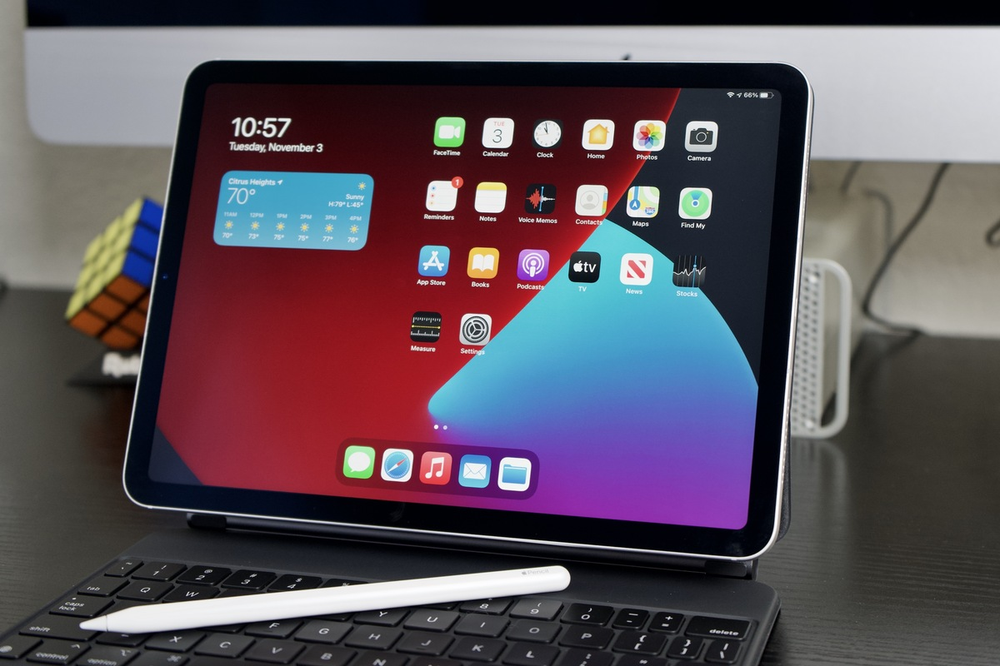
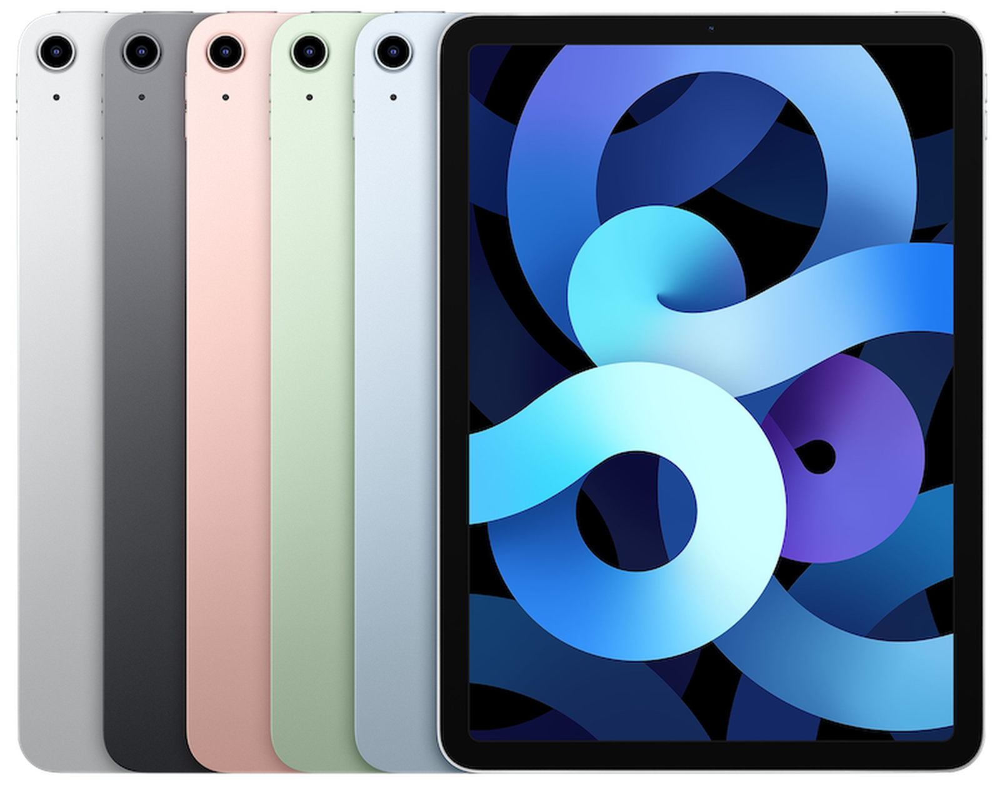
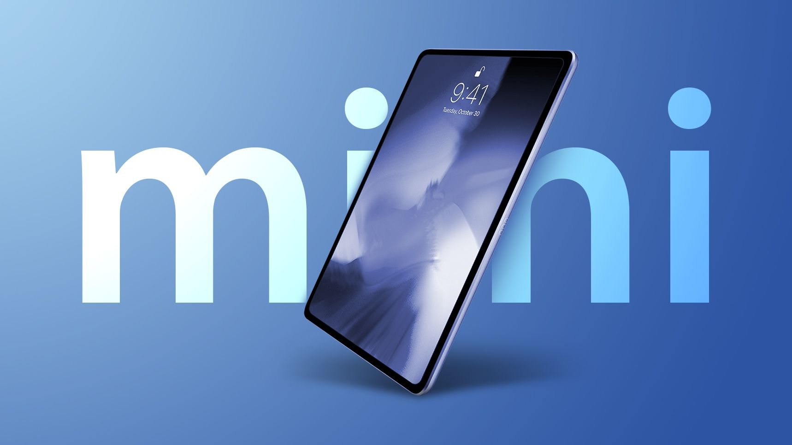
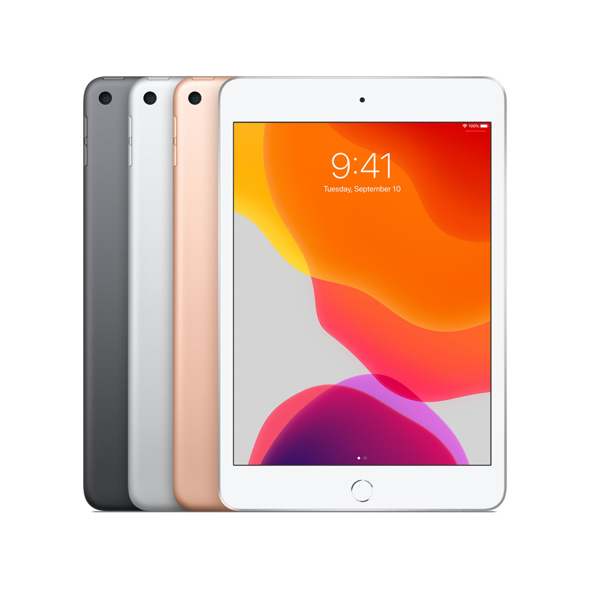

Liquid Retina XDR display,32.77 cm / 12.9-inch (diagonal) mini-LED backlit Multi‑Touch display with IPS technology,2D backlighting system with 2596 full‑array local dimming zones,2732x2048-pixel resolution at 264 pixels per inch (ppi),ProMotion technology,Wide colour display (P3),True Tone display,Fingerprint-resistant oleophobic coating ,Fully laminated display ,Anti-reflective coating ,1.8% reflectivity ,600 nits max brightness ,1000 nits max full-screen brightness; 1600 nits peak brightness (HDR), 10,00,000:1 contrast ratio Supports Apple Pencil (2nd generation)
Apple M1 chip,8-core CPU with 4 performance cores and 4 efficiency cores,8-core GPU,16-core Neural Engine,8GB RAM on models with 128GB, 256GB or 512GB storage,16GB RAM on models with 1TB or 2TB storage
The 12.9-inch iPad Pro display has rounded corners that follow a beautiful curved design, and these corners are within a standard rectangle. When measured as a standard rectangular shape, the screen is 32.77 centimetres (12.9 inches) diagonally (actual viewable area is less)...
Pro camera system: Wide and Ultra Wide cameras,
Wide: 12MP, ƒ/1.8 aperture,
Ultra Wide: 10MP, ƒ/2.4 aperture and 125° field of view,
2x optical zoom out,
Digital zoom up to 5x,
Five‑element lens (Wide and Ultra Wide),
Brighter True Tone flash,
Panorama (up to 63MP),
Sapphire crystal lens cover,
Autofocus with Focus Pixels (Wide),
Smart HDR 3,
Wide colour capture for photos and Live Photos,
Lens correction (Ultra Wide),
Advanced red-eye correction,
Photo geotagging,
Auto image stabilisation,
Burst mode,
Image formats captured: HEIF and JPEG,
Video Recording,
4K video recording at 24 fps, 25 fps, 30 fps or 60 fps (Wide),
1080p HD video recording at 25 fps, 30 fps or 60 fps,
720p HD video recording at 30 fps,
2x optical zoom out,
Audio zoom,
Brighter True Tone flash,
Slo‑mo video support for 1080p at 120 fps or 240 fps,
Time‑lapse video with stabilisation,
Extended dynamic range for video up to 30 fps,
Cinematic video stabilisation (4K, 1080p and 720p),
Continuous autofocus video,
Playback zoom,
Video formats recorded: HEVC and H.264,
Stereo recording,
TrueDepth Camera,
12MP Ultra Wide camera, 122° field of view,
ƒ/2.4 aperture,
Portrait mode with advanced bokeh and Depth Control,
Portrait Lighting with six effects (Natural, Studio, Contour, Stage, Stage Mono, High‑Key Mono),
Animoji and ,Memoji,
Smart HDR 3,
1080p HD video recording at 25 fps, 30 fps or 60 fps,
Time‑lapse video with stabilisation,
Extended dynamic range for video up to 30 fps,
Cinematic video stabilisation (1080p and 720p),
Wide colour capture for photos and Live Photos,
Lens correction,
Retina Flash,
Auto image stabilisation,
Burst mode
iPad Air
The iPad Air features a 10.9-inch edge-to-edge display with a 2360x1640 resolution, 3.8 million pixels, and a design that's similar to the iPad Pro with an aluminum chassis that features flat, rounded edges that wrap around the fully-laminated display. True Tone support is included for adjusting the display to match the ambient lighting, as is P3 wide color, 500 nits brightness, and 1.8 percent reflectivity.
Apple's iPad Air is the first iPad to offer unique color options similar to iPhone colors. The iPad Air is available in silver, space gray, rose gold, green, and sky blue. What's most unique about the iPad Air is the new Touch ID sensor integrated into the top button, a first for an Apple device. Apple's new iPad Air includes a 6-core A14 Bionic chip, which is Apple's newest A-series chifp built on a 5-nanometer process. Apple rarely introduces a new chip in an iPad before it comes to an iPhone, but the 2020 iPad Air got an A14 chip first. According to Apple, the A-series chip provides 40 percent faster CPU performance and a 30 percent improvement in GPU performance thanks to the new 4-core GPU architecture.
The A14 chip includes a new 16-core Neural Engine that's twice as fast as the Neural Engine in the prior-generation chip, and there are second-generation machine learning accelerators for 10 times faster machine learning calculations.

iPad Mini

Retina display,
20.1 cm / 7.9-inch (diagonal) LED-backlit Multi-Touch display,
2048x1536 resolution at 326 pixels per inch (ppi),
Wide colour display (P3),
True Tone display,
Fingerprint-resistant oleophobic coating,
Fully laminated display,
Anti-reflective coating,
1.8% reflectivity,
500 nits brightness,
Supports Apple Pencil (1st generation),8-megapixel camera,
ƒ/2.4 aperture,
Five-element lens,
Hybrid IR filter,
Backside illumination,
Live Photos,
Wide colour capture for photos and Live Photos,
Autofocus,
Panorama (up to 43 megapixels),
HDR for photos,
Exposure control,
Burst mode,
Tap to focus,
Timer mode,
Auto image stabilisation,
Photo geotagging,
Video Recording,
1080p HD video recording,
Slow motion (240 fps),
Time-lapse video with stabilisation,
Video image stabilisation,
3x video zoom,
Video geotagging,
FaceTime HD Camera,
7-megapixel photos,
ƒ/2.2 aperture,
1080p HD video recording at 30 fps,
Retina Flash,
Wide colour capture for photos and Live Photos,
Auto HDR for photos and videos,
Backside illumination,
Burst mode,
Exposure control,
Timer mode,
Video Calling3,
FaceTime video,
iPad to any FaceTime-enabled device over Wi-Fi or cellular,
Audio Calling3
FaceTime audio,
iPad to any FaceTime-enabled device over Wi-Fi or cellular,
Speakers,
Stereo speakers,
Microphones,
Dual microphones for calls, video recording and audio recording
,
Cellular and Wireless,
All models,
Wi-Fi (802.11a/b/g/n/ac); simultaneous dual band (2.4GHz and 5GHz); HT80 with MIMO,
Bluetooth 5.0 technology,
Wi-Fi + Cellular models,
UMTS/HSPA/HSPA+/DC-HSDPA (850, 900, 1700/2100, 1900, 2100 MHz); GSM/EDGE (850, 900, 1800, 1900 MHz),
Gigabit-class LTE (Bands 1, 2, 3, 4, 5, 7, 8, 11, 12, 13, 14, 17, 18, 19, 20, 21, 25, 26, 28, 29, 30, 34, 38, 39, 40, 41, 46, 66)4,
Data only5,
Wi-Fi calling4,
eSIM6,
Learn more about cellular data,
SIM Card,
Nano-SIM (supports Apple SIM),
eSIM6
for more details:visit apple customer care,
greater noida,delhi;
contact as :1111-7000002;